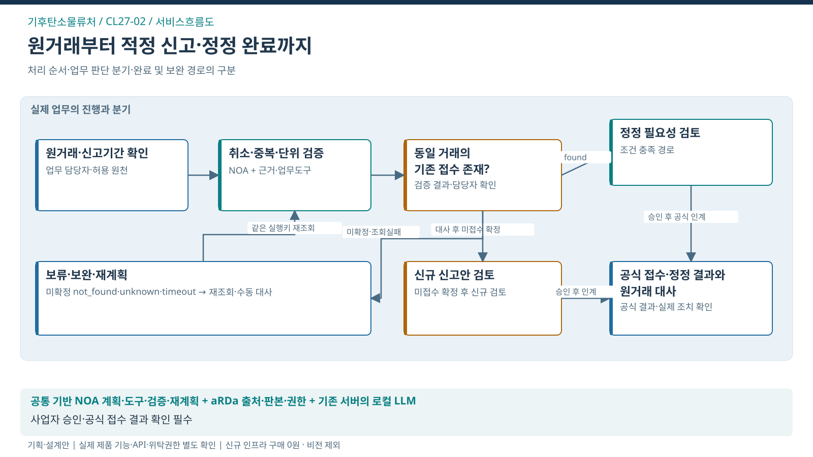

기후탄소물류처 / SERVICE FLOW
실제 거래에서 신고·정정 완료까지
거래 해석·반복 정정 부담 감소와 기한 내 적정 신고 완료

처리의 대상
원거래·신고대상·정정·접수 결과
업무 전환
원거래의 의미와 예외를 파악해 부족자료 확보→검증계획→신고 초안→공식 처리확인까지 연결
완료의 기준
공식 접수·정정 결과가 원거래와 대사되고 미처리 거래가 남김없이 인계됨
이 서비스의 법정업무 기반
기후탄소물류처와 연결된 업무
법적 수행범위에서 출발하는 AX 제안
연결은 소관·예산권의 확정과 구분
- 화물운송실적관리(FPIS) ↗운영 위탁 가능 기관 + TS 수행 확인
문제 근거와 기대편익
업무 근거: TS 공개업무 안내
해결할 문제 가설: 거래의 기간·단위·취소·재위탁 관계가 다르면 서식 자동 채움만으로 적정 신고가 보장되지 않는다
수혜자: 화물운송사업자·행정 통계 이용자
기대효과: 기관 — 신고자료의 정합성·처리 추적성 개선 / 사업자 — 자료 준비·반복 정정 부담 감소
확인 지표: 기한 내 적정 처리율 / 중복·정정률 / 사업자 총준비 부담
기준값·목표 개선율: 현업 실증으로 확정
전문가 역할·제외범위·검증조건
전문 판단·실행: 사업자의 신고내용 확인과 공식 시스템의 접수·처리
이번 과업 제외: 신고의무·법적 적정성 확정, 무승인 신고, 긴급 위험물 관제 자동제어
선행 확인: 유효 신고기준·승인된 원거래 자료·개별 사업자 권한·정정 경로
제품 역할은 적용안. TS 설치·성능·현업 효과의 검증 완료와 구분.